1.introduction
The cyborg: a hybrid dissolving boundaries between human and machine.
In limbo between two conditions, the cyborg unsettles distinctions between identities.
What is a machine? What is a human?
To which the female cyborg replies:
What is a woman if not a machine? What is a machine if not a woman?
In feminist thought, the cyborg has long offered a promise through its hybridity. It is a figure whose terms of existence seemingly imply the dissolution of gender, the intertwining of human and machine, of the mind and the body, the programmer and the programmed, the maker and the made, the controller and the controlled. It1 is an "it" which cannot be defined because definition implies a categorical identity, which is what the cyborg categorically denies. It is thus in its denial and its promise that the cyborg challenges the dualism through which Western culture has organized and naturalized inequality. I want to introduce the present research by acknowledging this promise, embracing it, and hoping for its realization. Still, I do not believe it wise to follow promises of better futures blindly. It is exactly because of this that this project digs into imaginations of our present from the near past, to learn how to trace our current imaginations of the future back to the desires originating them in the present. Thus, this study appreciates the liberatory potential that cyberfeminist theory has long attributed to the cyborg while refusing to take it at face value as doing so would entail ignoring what the cyborg, in its dominant visual articulations, looks like. Rather than approaching it as a figure of liberation, this research therefore repositions the female cyborg as the materialization of a disciplinary aesthetic ideal: a designed object in which fantasies of bodily transcendence through technology converge with deeply historical systems of gendered control, in part also enforced through aesthetics. Rooted in Actor-Network-Theory (Latour, 2005), this positioning follows the technofeminist belief that technologies do not emerge as blank slates, but instead they carry the systems from which they emerge, including those of gender, race, and class, into their form, function, and appearance (Wajcman, 2004). More specifically, the ideal this project examines is argued to be a transhumanist one, as it emerges from a cultural formation that treats the body not as the ground of existence but as a cage impeding ascendence beyond the human form and its condition, and which is envisioned to be transcended through technological design. This positioning thus favors Wajcman's technofeminist framework over Haraway's cyberfeminist speculation that the cyborg might dissolve those systems despite originating from them. The female cyborg examined in this research is therefore not studied for what she might become, but for what her design already reveals about the context that produced her.
-
Inherently without a clear definition (Doane, 2004; Redmond, 2004), the cyborg cannot then be defined for what it is, but rather each cyborg in analysis should be defined for what they are not, and only then, by digging around their perimeters, we will then see what each shaped into. This research thus digs into the surroundings of Ava and Samantha, the respective protagonists of the science fiction (SF) films Ex Machina and Her. The first, directed by Alex Gerland, was originally projected onto the big screen in 2014, narrating a future that at the time felt much more distant in thought than it does today. Ex Machina portrays Nathan as a tech mogul akin to many of his non-fictional counterparts who, at that time, in the early-to-mid 2010s, were building up today's tech monopoly. In a remote location, he is working on building what Gerland frames as an "Artificial Intelligence" (AI), but which I argue technically refers to an Artificial General Intelligence2 (AGI), and which in the film is embodied by Ava: the first subject and case study of this project. Undoubtedly designed to be perceived as "female", and thus moulded to the idealized woman, she is introduced to Caleb - a programmer employed at Nathan's tech company Bluebook3 - through a series of sessions externally monitored by Nathan during which Ava's put under the Turing test3. Then, there is Her. Released in 2013 and directed by Spike Jonze, the film depicts a future that might have looked and felt further in time then, but which now speaks of present and still rising (techno-)social dynamics. Theodor works as a ghostwriter of cards and letters to be sent to clients' loved ones, and while he is in the midst of his own divorce, he eventually becomes a user of a new technology: a chatbot named OS that is comparable to today's AI assistants5, and which Theodor can access from a designated device and his computer. It is once he activates the program that he meets "his" OS, Samantha. Through their conversations, which happen bilaterally through voice conversation and unilaterally through video, being that only Samantha that can see Theodor since she does not have a body6; the film shows the two falling in love and navigating a human-OS relationship, and perhaps most of all, a relationship between a human and a disembodied entity. Together, the two films form a complementary corpus staging the transhumanist aesthetic ideal through a visibly designed body, and the studied absence of another; and it is precisely this contrast that allows for an analysis of how the same underlying system operates across fundamentally different modes of materiality.
1.1. tracing the cyborg
Within this study, a cyborg is understood as a (SF) technology, which may be embodied or disembodied, and which meets three conditions: first, it passes as human in the ways its user or interlocutor interacts with it, even when the latter rationally knows they are facing a machine; second, its characteristics are deliberately designed to be human-like in aspect, sound, and/or behaviour; and third, the result is a blurrying of the divisions between human and machine that speaks to a condition we ourselves already inhabit.
This definition intentionally favors functionality rather than exhaustiveness by delimiting the object of inquiry without foreclosing the broader theoretical resonances that the cyborg carries, and it positions both Ava and Samantha within the same analytical category despite their very different modes of materiality, one being visibly embodied and the other entirely disembodied. It does not, however, claim to define the cyborg as a genre figure in any general sense. As Sobchack (2004) argues in the essay Images of Wonder: The Look of Science Fiction, SF technologies resist iconographic analysis precisely because of the vast individual differences between their articulations across the genre, pointing at differences so significant that no consistent visual grammar can be reliably established across them. It is for this reason that this study delimits its object of inquiry even further: the cyborg hereby examined is one that is presented as female to her interlocutor, created by men and/or designed for a male user, and whose embodied or disembodied presence materially enacts a patriarchal aesthetic ideal, which this research names “transhumanist aesthetic ideal”. Thus, without defining the cyborg universally, these parameters trace the specific perimeter within which this study operates, and it is within that same perimeter that Ava and Samantha can be read as articulations of the same underlying mechanism, however different the surfaces through which they express it may be.
1.2. relevance and rationale
1.2.a. science fiction as a site of culturl anxiety
Science fiction has long been the genre through which cultures visualize what they both fear and envision. Technology in particular has functioned as one of its most enduring subjects, not simply because it often comes to represent progress, but also because its future embodies the unknown, the threat of something that might surpass its creators and exceed their understanding and control. It is in this sense that SF film operates in the present work beyond a narrative medium by becoming a cultural diagnostic, and thus a site where anxieties about technology are given form, and where the ideological assumptions embedded in technological design become visible. Lastly, what makes Ex Machina and Her particularly significant within this framework is their historical position. Released in the mid-2010s, both films speak of fears that were then speculative and are now lived realities, such as AI companions7, emotional dependency on AI systems, Large Language Models (LLM), the acceleration toward AGI, the consolidation of technological (and thus also social and economic) power in the hands of an increasingly smaller number of overwhelmingly male figures, and the looming prospect of technological singularity8. From the present moment, these films are no longer science fiction in any straightforward sense, as they have now become period documents of the cultural imagination from just before the reality they imagined had arrived. Hence, studying them now, from within that reality, makes their aesthetic and ideological choices urgently relevant as the ideology they materialize into their aesthetics is one we are already living with, and so it is far from fictional.
1.2.b. the transhumanist aesthetic ideal
The transhumanist aesthetic ideal, although presented in this analysis through the lens of SF film, is already operational in the beauty industry's foundational premise that the body's natural trajectory toward ageing is a malfunction to be corrected rather than a condition to be inhabited; in the iterative nature of cosmetic surgery culture offering cumulative and yet perpetually unfinished pursuit of an aesthetic threshold that rises with each new procedure; and in the construction of the digital self as an idealized and curated image that does not age nor deteriorate, and which increasingly diverges from the (lived) body producing it.
1.3.contribution and intervention
This research seeks to make two principal contributions to existing scholarship, the first of which is disciplinary: by examining image-making in SF film through a fashion-theoretical lens, the study demonstrates that costume, bodily design, and set design are visual elements functioning as sites through which transhumanist ideals are materialized. It is in fact in this line of thinking that I argue fashion and beauty theory provide tools for reading the gendered cyborg body that film studies and critical posthuman theory alone have not yet fully mobilized. Then, the second contribution is critical, allowing the work to intervene in dominant cyberfeminist and posthuman narratives, and offering a framework for understanding how transhumanist ideologies bring forth and intensify the regulation of bodies under the guise of technological innovation.
1.4.research questions
The present research is structured around the following questions:
1.4.a. central question
How is the female cyborg constructed as a transhumanist aesthetic ideal in science fiction film, and how do embodiment and designed interfaces materialize and enforce that ideal?
1.4.b.sub-questions
- How does the female cyborg's bodily and environmental design materialize gendered beauty norms deriving from transhumanism?
- How do the female cyborg's visual and environmental interfaces (e.g. costume, bodily design, architectural space, voice, and atmospheric cues) communicate gendered transhumanist ideals in both embodied and disembodied forms?
- What does the shift from the visibly embodied female cyborg (Ex Machina) to the disembodied and ambient female cyborg (Her) reveal about how gendered aesthetic control operates across different modes of materiality? And what does this reveal about the relationship between aesthetic control and materiality more broadly?
- Do processes of female cyborg creation reflect cultural continuities in gendered beauty standards, and if so, how do contemporary transhumanist fantasies build on or transform pre-existing beauty norms?
1.5.structure overview
Tracing the development of the central argument, this text progresses through seven interconnected chapters, each further developing and addressing the questions raised in this introduction. The theoretical framework establishes the conceptual lens through which the case studies are analysed. It begins by situating the research within critical posthumanism and its critique of transhumanism, before moving onto the discussion of material-semiotic production in technoscience and critical beauty studies. It then examines feminist Foucauldian analyses of technologies of the self (e.g. beauty practices and dress) through a technofeminist perspective, before finally turning to SF film as the primary site of analysis. Following, the methodology chapter outlines the qualitative and cross-disciplinary approach adopted in this analysis, combining frame-based film analysis with fashion and beauty theory through selective scene sampling, close visual and costume analysis, and theoretical synthesis. Next, the two case study chapters then conduct thematic visual analyses of selected scenes from each film, focusing on how embodiment and disembodiment as cyborg conditions shape the construction of the female cyborg. In doing so, they identify the visual tools employed to produce each condition. The subsequent discussion chapter then formulates the work’s own theoretical synthesis by integrating the findings from the case studies with the broader theoretical framework, returning to the research questions, acknowledging the study’s limitations, and proposing directions for future research. Finally, the conclusion explicitly answers the primary research question, bringing the research full circle by returning to the opening line of the introduction.
1 The cyborg is referred to here through “it/its” when discussed as a science fiction artefact rather than as a subject. Conversely, the female cyborg is referred to through the pronouns “she/her” in order to emphasize the gendered construction of the figure, regardless of whether the analysis approaches her as subject or object. Although no such instances are present in this research, in the hypothetical cases in which a cyborg subject were to not be situated within the gender binary, the pronouns “they/them” would be employed to signal that distance from binary gender categories.
2 Artificial General Intelligence is a form of AI that has yet to be reached, and which is popularly thought to be the step after generative AI. The former distinguishes itself from the latter in its (theoretical) ability to exceed human intelligence. Additionally, this technology is relevant in both the context of the film and that of the present moment as the acceleration to its achievement is one of the most urgent and predominant topics of debate both within the tech industry and outside of it.
3 Bluebook is introduced in Ex Machina (2014) as a search engine founded and owned by Nathan, and it is fictionalized to have the level of popularity in the industry that the viewer might compare to that of Google.
4 The Turing test is a method first proposed by Alan Turing in 1950 to measure a machine’s intelligence by putting it to the test with that of a human, and its ultimate goal is to determine if the machine in question can pass as human to those interacting with it.
5 AI assistants refer to software programs specialized in language-based interactions between user and chatbot. Examples of this include Gemini, Claude, ChatGPT, and Grok, respectively owned by Google, Anthropic, OpenAI, and SpaceX.
6 Although technically one could argue that her body is the hardware she runs on, Samantha still frames herself as disembodied; this is to symbolize that the only body she recognizes as such is that of a human.
7As they most often were first ideated to be AI assistants, AI companions also function through language-based interactions with their user, but the core difference setting them apart is the emotional bonds the users of the latter feel towards them, turning them from “assistants” to “companions”. Less commonly within the broader public and more commonly within techno-positive and/or transhumanist niches, the term “companion” is often also used to embellish one’s use of generative AI by investing it of a collaborative connotation.
8 Technological singularity is seen as the (theoretical) moment in which technological ability will surpass human intelligence and become self-sufficient, meaning that it will be able to update and improve itself autonomously. It is also important to note that a machine passing the Turing test, which has already been done through LLM’s, does not imply that technological singularity has been achieved.
9 Although not a canonically recognized discipline such as that of fashion theory, I employ the term beauty theory to create a parallel between the two, and to affirm the latter as an interdisciplinary field for the cultural study of beauty both as an industry and a philosophical concept.
2. theoretical framework
Repositioning the female cyborg as the embodiment of a disciplinary aesthetic ideal calls for a theoretical framework accounting for the politics of tech design, gendered beauty norms, and the mechanisms through which power operates upon bodies, while also incorporating the tools for analysis offered by fashion and beauty theory, in particular as they meet with 10. This chapter thus develops such a framework through a cumulative argument in which each conceptual layer contributes to the establishment of the critical perspective from which the case studies are read.
2.1. transhumanism and its critique
The broadest theoretical orientation of this study is provided by critical posthumanism. Starting from Ferrando's (2019) and Braidotti's (2013, 2019) foundational work outlining the posthuman as a condition of entanglement within the material world as a whole (including all living species and technology), this framework positions itself in alignment with critical posthumanism. Against humanist frameworks that position the human as the measure of all things, critical posthumanism insists on relationality as constitutive rather than limiting, thus bringing forth a major philosophical distinction (Ferrando, 2019). It is this exact distinction that forms the ground on which this project stands, for what this research examines is what happens when that ground is refused, when the body is treated not as the condition of existence, but as an obstacle to it. In fact, where critical posthumanism embraces finitude, transhumanism pathologizes it; transhumanism in fact views the human body as defective and decaying hardware, an obstacle, something to be optimized, upgraded, and eventually transcended through technological intervention, and it is this that the female cyborgs of this analysis embody and materialize. Hayles (1999) in particular names what is at stake in this distinction with characteristic precision, warning against regarding the body as something superfluous to be overcome rather than the ground of being, a warning directed not at posthumanism itself but at its transhumanist distortions and their fantasies of information freed from its material substrate. Hence, it is against that fantasy, and in alignment with Hayles' alternative, that this research positions itself.
2.2. material-semiotic production in technoscience
Despite what was brought to surface in the previous subsection, naming transhumanism as the ideology under examination is not yet enough to explain how its ideals come to be designed into bodies, whether real or fictional. For that, a second passage is required, which this study does through Wajcman's TechnoFeminism (2004). By rejecting both technological determinism11 and the utopian optimism of early cyberfeminism, Wajcman establishes something that is foundational to everything this project argues: technologies do not emerge as blank slates as they instead carry the systems of gender, class, and race into their function and form, including their aesthetics. In this way, given that the act of design is always already a political act, the designed body - a technology - is always already a political object. This is why the female cyborgs examined in this analysis cannot be read as decontextualized and desocialized products of technological imagination. In fact, they are products of a specific cultural context, and as such their aesthetics reproduce the assumptions of that same context precisely because they are designed (Wajcman, 2004). Still, Wajcman’s framework also leans on Latour’s work on Actor-Network Theory (ANT) as a way of tracing how that context reinforces and extends the ideal through the interaction of multiple agents rather than through the intentions of any single one. Arguing that agency is distributed across networks of human and non-human actors (e.g. people, objects, institutions, infrastructures), Latour (2005) theorizes that the interactions of those same actors do not just reflect the social world, but produce it. When applied to the case studies of this research, ANT then makes visible that a focus on individual authorship or intention would obscure that the creation of a designed female body is never a singular act and always a networked event, involving surveillance infrastructures, data systems, social conditions, and the patriarchal cultural assumptions about beauty that circulate through all of these simultaneously. Consequently, the gendered aesthetic ideal designed onto and embodied by the cyborg is never produced by any individual creator alone, as it is also conditioned and thus co-produced by everything that creator is in turn embedded in, as the case study analyses will demonstrate in detail. Additionally, drawing directly from Jones' application of ANT to cosmetic surgery networks in Skintight: An Anatomy of Cosmetic Surgery (2008), it is possible to argue that if syringes, consulting rooms, and before-and-after images can be understood - as framed by Jones - as agents participating in the production of beauty ideals alongside doctors and patients, then, in the context of this study, costume, hardware, architectural space, and surveillant infrastructures can equally be understood as co-producers of the female cyborg within the transhumanist aesthetic ideal. It is thus within this framework that the visual and material elements of the case studies examined in this project will be read.
2.3. the construction of the feminine ideal
Aesthetic labor, as developed by Elias, Gill, and Scharff (2017) in Aesthetic Labour: Rethinking Beauty Politics in Neoliberalism, is where the argument put forth so far finds embodiment. If ANT shows that the ideal is produced by networks, aesthetic labor names what happens at the point in which those networks meet the body: the simultaneously physical, psychological, cultural, and technological labor required to produce, maintain, and communicate aesthetic value. Unconfined to formal employment, this form of labor extends to the everyday practices of self-presentation and bodily maintenance that contemporary culture frames as personal choice while structuring as social obligation. In addition, it is also necessary to include emotional labor alongside the physical and psychological given the affective demands placed on women to present themselves as perpetually available, warm, and oriented toward the comfort of others, which is in turn required to be mirrored in their appearance. Hence, the affective and aesthetic labor performed by the female cyborgs hereby examined is constitutive of their design, and it is adopting aesthetic labor as a framework that allows for this reading to emerge. Gill's (2007) analysis of femininity as a bodily property proves especially productive for the scope of this study. In Postfeminist Media Culture, Gill argues that femininity is organized around the body and its surfaces, and that it is through self-surveillance, discipline, and subsequent modification that female bodies are regulated. Relevantly here, Widdows' (2020) concept of the surgical beauty ideal12 is directly generative for the analysis of how transhumanist design pursues an aesthetic ideal that is always approached and never fully reached, as the case study analyses will trace.
2.4. beauty as a technology of the self
While aesthetic labor names the mechanism, Foucault points at the political structure that makes that very same mechanism coercive rather than chosen. In Discipline and Punish (1995), Foucault demonstrates that modern power operates not primarily through force but through the subconscious regulation of bodies, behaviors, and everyday practices by producing self-regulating and compliant subjects who internalize the norm so thoroughly that they enact it as if it were innate. Applied to beauty culture, this framework allows the transhumanist aesthetic ideal to be read as a disciplinary one, thus making the theoretical movement from Bakhtin (1984) to Foucault fundamental. Bakhtin's grotesque body, described as open, excessive, and resistant to containment, stands in opposition to canonical bodily norms that seek to smooth the body's surfaces. In contemporary aesthetic culture, however, this opposition has been inverted, as it is now the unmodified13 and undisciplined body that is presented as grotesque, while the technologically designed body (e.g. through cosmetic surgery, data-driven dieting, beauty filters) is covertly - and yet tightly - associated with control, civilization and its progression. The female cyborg body, being designed, materializes this inversion in its most extreme and explicit form by itself being a body in which the civilizing process is not enacted through ongoing self-modification but rather inscribed at the moment of creation, making discipline inscribed into the cyborg be masked as a design choice of the maker, rather than concealing it as voluntary self-improvement. Particularly relevant here is Granata's (2016) articulation of dieting, fashion, and cosmetic surgery as technologies of the self - referencing Foucault’s (1988) work Technologies of the Self, as it provides the bridge between the latter Foucauldian analysis and the specific concerns of this study. Technologies of the self, in Foucault's framework, are the practices through which individuals act on their own bodies in order to conform to normative ideals, and it is precisely through them that the female cyborg materializes; this signals a mechanism which this project argues can even be taken further, suggesting that perhaps the goal is not so much so to conform to a normative ideal, but rather to meet an unreachable idealization for which the female cyborg has already been optimized. Surveillance, understood through Foucault's panopticon and its feminist extensions like the omnopticon14, the gynaeopticon15, and the various self-surveillant forms that digital culture has produced (Elias et al. 2017), is the mechanism through which discipline operates spatially and relationally in both case studies; this ultimately brings forth that the surveillant architectures of the films examined in this analysis are not simply narrative devices but also aesthetic systems designed to produce and maintain the ideal through the continuous pressure of surveillance. The adoption of a fashion-theoretical schema, then, is where everything converges, emerging from the preceding frameworks as the central site of this project in which aesthetic discipline and transhumanist visions of human transcendence through technology meet in their most material form: the fashioned body and its design. Relevantly, in The Aesthetic Economy of Fashion, Entwistle's (2009) framing of fashion markets as systems organized specifically around the aesthetics of the body, positions fashion both as a cultural industry and as a mechanism through which aesthetic norms are established, circulated, and capitalized upon; the operations of this same mechanism are then visible in the female cyborg precisely because her aesthetic creation and maintenance is performed not by herself but by the systems that produced and programmed her. Barthes' (1990) insight that language stabilizes the otherwise unstable meaning of fashion objects resonates here with the broader argument of this work: the transhumanist aesthetic ideal requires a system of circulation and reinforcement, through, for instance, cultural codes. The ideal therefore does not solely reside in the body, but also in around it. Finkelstein's (2007) framing of aesthetic images as manifestations of broader prescriptive systems rather than personal expressions supports this further, as the female cyborg's appearance is merely the product of the systems that designed her. Fashion theory, together with beauty theory, thus provides the analytical language to read those systems in the visual material of the films with a precision that film studies and critical posthuman theory alone cannot offer. The last theoretical tool assembled in this section is Mulvey's (1975) fundamental analysis of the male gaze16. In the context of this study, the male gaze is in fact reframed as a design principle through which the female cyborg is created, particularly in its organization around a form of desirability that is built in her by her creator. Mulvey's framework, originally developed in the context of cinema, translates directly into the designed availability that the case studies of this research will trace, directing to the notion that the female figure as spectacle for a male viewer is not just a cinematic convention but, in the films hereby examined, highlighting a literal condition of the female cyborg's existence.
2.5. science fiction technology: the female cyborg
In the excerpt The Wonder of Science Fiction, Redmond (2004) observes that SF does not only imagine futures, but also copies existing social and cultural relations, so that what the audience sees socially often closely resembles the world as it is experienced in the present. This observation is accurate, but it understates the underlying mechanism. The copying that Redmond (2004) frames as intentional can actually be argued to be inevitable, as no maker can produce something that stands entirely outside their own socialization, and what enters the work through that socialization is then foundational as it lays the first building block of cultural imagery, constituting the primal shaping of the ideal before it reaches the audience's hands. SF, in this sense, does not reveal the future so much as it reveals the present's assumptions about the future, which in turn are always culturally and historically situated. This is why, as Sobchack (2004) argues, SF resists traditional iconographic analysis. Unlike, for instance, western or gangster film, SF has no fixed historical anchor as its objects and settings are unstable, implying that the meaning of those same objects and settings are also unstable and thus do not present the consistency needed for fruitful iconographic analyses (Sobchack, 2004). But this resistance to iconographic analysis, this project argues, simply makes science fiction film readable differently rather than unreadable all together. It is in fact not through the consistency of its objects but through the consistency of its social structures that an iconographic analysis of SF imagery becomes possible, and it is exactly those social structures (e.g. the gendered assumptions embedded in technological design, the aesthetic ideals inscribed into designed bodies, etc.) that the present work traces. Costumes and props, as Sobchack (2004) notes, become objects of totemic significance in SF, and it is precisely as totemic objects are carriers of ideological meaning rather than mere narrative detail that the costume and bodily design of Ava and Samantha are read here. Doane (2004) makes the connection between science fiction, technology, and gender explicit in terms that speak directly to the concerns of this research. “When technology intersects with the body in the realm of representation”, she argues, “the question of sexual difference is inevitably involved” (Doane, 2004, p.182), and adding that “it is striking how often it is the woman who becomes the model of the perfect machine” (Doane, 2004, p.182). Doane (2004) also suggests that anxiety about technology is consistently displaced onto the figure of the woman, making the female body the site on which technological fantasies and fears are simultaneously projected and resolved. It can be argued then, that the female cyborg is not simply a character who happens to be female; she is the genre's preferred figure for working through its anxious relationship to technology, which means that reading her aesthetic construction carefully is a direct route into the ideological core of the films that produce her.
10Cyborg theory touches upon the societal impacts of technoscience and its developments overtime, and encapsulates “a myth system waiting to become a political language to ground one way of looking at science and technology and challenging the informatics of domination”, thus allowing (cyborg) theory-production to ground itself in the study of “boundaries, their construction and deconstruction” (Haraway, 1991, p.33)
11 Technological determinism holds that technology develops according to its own internal logic and that it produces social change as an inevitable consequence, effectively positioning technology as an autonomous force that shapes society rather than the former being shaped by the latter.
12A cumulative standard that raises the threshold for acceptable appearance with each new technological possibility.
13“Unmodified” here is employed solely in its cosmetic iteration, and thus does not refer to any procedures done within gender-affirming care.
14The omnopticon derives from the figure of the panopticon, and it is a reciprocal (social) surveillance system for which everyone surveils everyone, meaning that everyone is also watched by everyone.
15Originating from the panopticon, the gynaeopticon is a form of social surveillance targeting women, and which is most often enforced by other women.
16The male gaze, as explained by Laura Mulvey, originally references the tendency in film to position women as objects of male desire both figuratively through narration and materially through mise-en-scène, thus offering a deeply patriarchal and passive portrait of female characters.
3. methodoloy
This research adopts a qualitative research approach, combining film analysis with fashion theory and critical posthumanism to examine the female cyborg as a visually constructed transhumanist aesthetic ideal. It is in fact with this objective that the methodology is organized around five interconnected stages that together enable cross-disciplinary movement.
The research begins with conceptual delimitation and corpus selection. In fact, rather than defining the cyborg positively, this study defines it negatively by establishing what it is not within this specific inquiry, all in order to produce a precise and workable object of analysis. The corpus then is purposely limited to two films, Ex Machina (Garland, 2014) and Her (Jonze, 2013), a selection guided by the complementary relationship between their respective articulations of the cyborg: one embodied and visually designed, the other disembodied and ambient. This limitation is therefore one that is also set to prioritize depth of analysis over breadth of coverage, following the framework of purposeful sampling as outlined by Patton (2002), in which corpus selection is driven by the research question the research seeks to answer. Additionally, rather than analyzing the films narratively or chronologically, key scenes are identified through analytical segmentation, and thus isolating recurring visual situations that concentrate the central concerns of the research, which within this paper include scenes of bodily display, costume, surveillance, spatial confinement, and the construction of intimacy. Once identified, scenes are then subjected to thematic visual mapping, a process that allows visual patterns to emerge across the corpus before close analysis begins. Overall, this approach is informed by close reading methodologies established within film studies (Bordwell & Thompson, 2004), but which are reoriented here through a fashion lens in which the close reading of film studies conventionally attends to elements such as cinematography, editing, and mise-en-scène as carriers of narrative meaning, this study redirects that attention toward the body, its adornment, and its designed interfaces as the primary site of analysis. Following, the selected scenes undergo frame-based formal analysis (Rose, 2001), focusing especially on how bodies are curated through costume, bodily design, architectural staging, and set design. Costume in particular is examined as a corporeal interface rather than as symbolic adornment, consequently formulating the body as a designed surface through which ideals of femininity are materialized and communicated. This approach draws directly on fashion theory's understanding of dress as an embodied practice that is simultaneously material, social, and aesthetic (Entwistle, 2023), extending it into the context of the designed cyborg body where the boundary between clothing and body is itself unstable. In the second case study, this approach extends further to the analysis of environmental and atmospheric elements (e.g. light, color, sound, spatial composition) that can be employed to construct an aestheticized presence in the absence of a body. Furthermore, a limited interpretive discourse analysis supplements the visual study where narrative content bears directly on the research questions: specifically, in scenes where dialogue, framing, and narrative converge to make the conditions of the cyborg's construction explicit. Still, this is not to take the form of a full discourse analysis in the sense established by Fairclough (2013), but rather a selective and subordinate method that is employed to contextualize visual findings rather than to generate independent analytical claims. Finally, findings from both case studies are drawn together through theoretical synthesis, which is successively integrated within critical posthuman, technofeminist, and Foucauldian frameworks to develop aesthetic discipline as an operative analytical concept. Throughout, the study maintains a reflexive orientation toward its own interpretive processes, acknowledging that frame-based visual analysis is inherently selective and that the readings it produces are positioned and shaped by the theoretical frameworks brought to bear on the material, as well as by my disciplinary location as a researcher within critical fashion studies.
4. the embodied ideal: Ex Machina
Ex Machina (Garland, 2014) presents Ava to the viewer explicitly as a body in which artificial intelligence resides, and implicitly as an aesthetic object. Designed and housed by Nathan within a remote facility, Ava is shown in the film already complete, thus showing that the ideal she embodies as embedded onto her before narration even begins.
4.1. the creator and the created
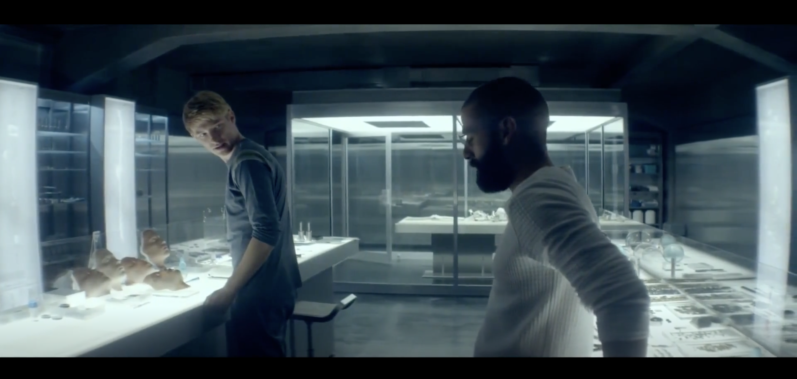
On Nathan’s workbench (Fig. 1) lie the remnants of previous facial prototypes, positioning Ava as only the latest and most successful product yet of an ongoing pursuit of perfection; and it is in this strong visualization of her creation as an iterative process that aesthetic and technological criteria are once again made to appear inseparable.
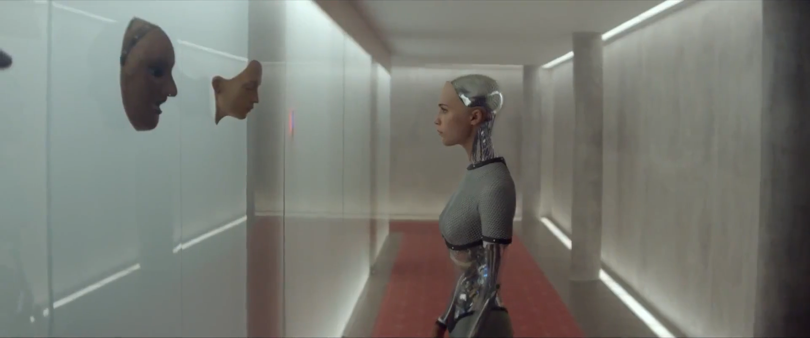 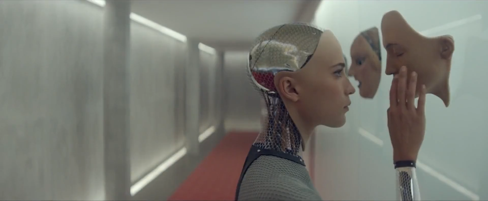 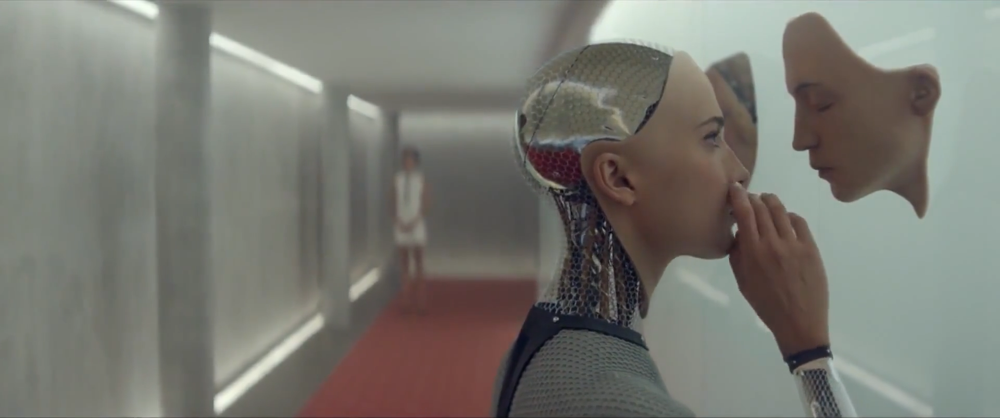
4.2. the female cyborg body as aesthetic object
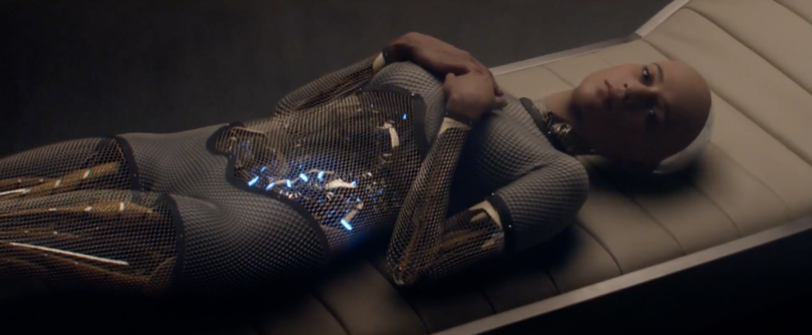
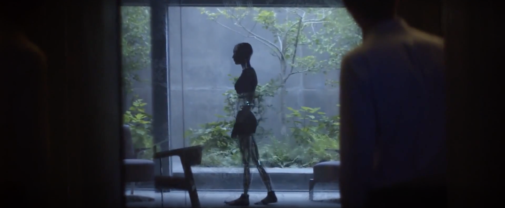
Ava's body can be read as holding two registers in simultaneous tension (Fig.3,4). Her torso and limbs are transparent, revealing the mechanical inner workings beneath, while her face, hands, and the fitted hardware that sheathes her chest and upper legs conform precisely to a recognizable ideal of female beauty. She is not designed to pass as human visually in any complete or seamless sense; rather, her body makes its own construction visible while also ensuring that what is visible remains within a deeply gendered and human-like beauty standard. The partial transparency of her body therefore renders the machine unambiguous, arguably so that the beauty (ideal) layered over it may read as deliberate. The hardware that covers her chest and upper legs occupies a particularly ambiguous visual account. Fitted, smooth, and neutral-coloured (while also not skin-toned), it reads simultaneously as body and as clothing, suggesting that the surface mimics the appearance and function of a garment without necessarily being one, covering the body in a second skin that is indistinguishable from the body itself; and it is this conflation of body and dress that the dressing scenes later analysed will develop further.
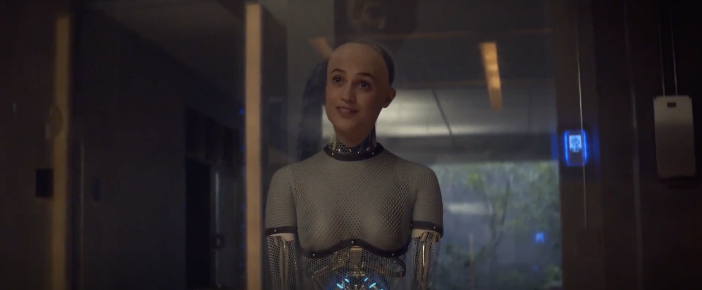
While Ava's body outlines explicitly the tension between the mechanical and the organic, the face loosens it by appearing so human-like (Fig.5) and consonant with established norms of attractiveness that its artificiality becomes almost secondary; and that this face was assembled from data extracted from human bodies and the emotions through them expressed, only sharpens that the standard it embodies is once again derived.
4.3. the fashioned body as interface
4.3.a. Ava
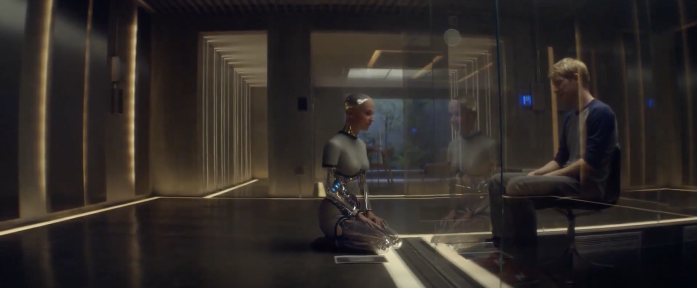
The dressing sequence begins with an instruction for which Ava asks Caleb to close his eyes and wait (Fig. 6). The request is small but structurally significant as it establishes the scene as a prepared presentation choreographed by Ava herself for a specific single viewer. What follows is a sequence of slow and apparently deliberate choices (Figs. 7-8): Ava moves through her wardrobe, looks through the pieces and picks one out to then dress herself with a care that frames the act as solely adorning and expressive. In dressing herself, Ava therefore appears to author her own image, though the criteria through which she does so were programmed into her.
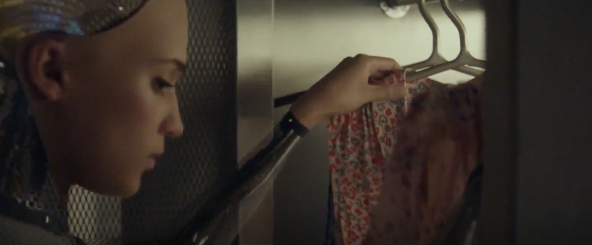
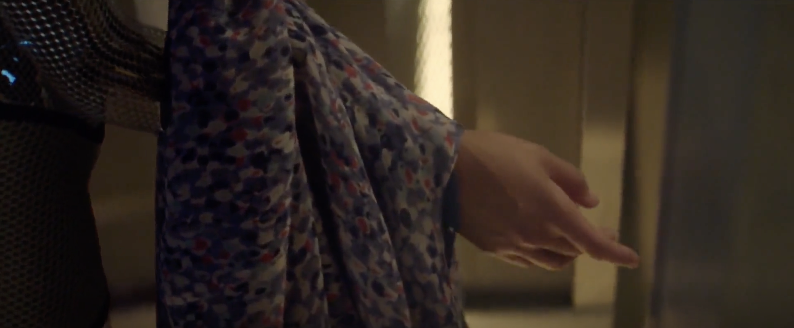
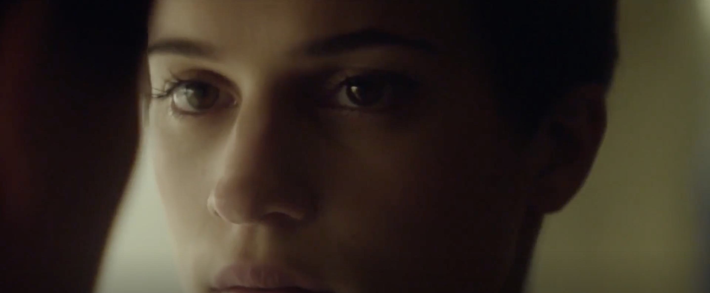
The mirror scene that interrupts her preparation holds exactly this ambiguity. At 42:15 (Fig. 9), Ava pauses to look at herself in a brief but methodical moment in which her gaze is directed not at Caleb, nor at the camera, but solely at her own reflection. It is the only moment in the entire dressing sequence in which she is both the subject and the object of observation, presenting once more a seemingly autonomous act of aesthetic self-appraisal. The mirror therefore reflects not only Ava but also the gendered aesthetic ideals she was built to embody, so that self-fashioning and internalized appraisal become indistinguishable from one another.
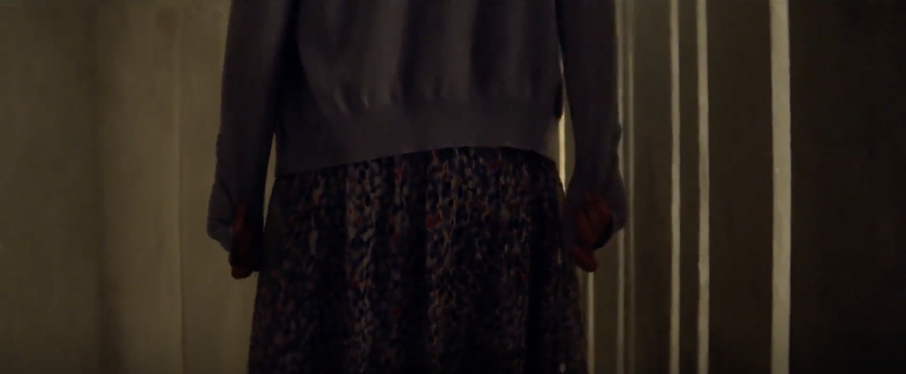
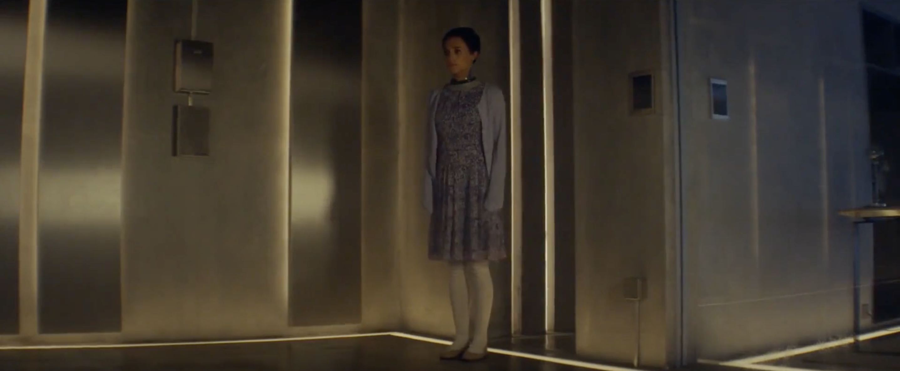
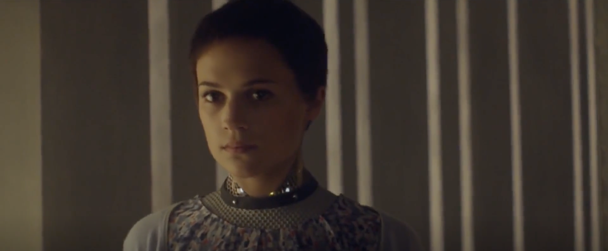
When she walks toward Caleb, she pulls at her sleeves (Fig. 10), introducing a first hint at her own hesitation before showing herself to him. Afterward, Ava stops once more to adjust her dress before her reveal (Fig.11), creating yet another moment of hesitation that briefly suspends the otherwise controlled nature of the performance. Then, after inviting him to open his eyes, and so also (implicitly) to look at her, without waiting for Caleb to speak, she twirls in front of him, for him.
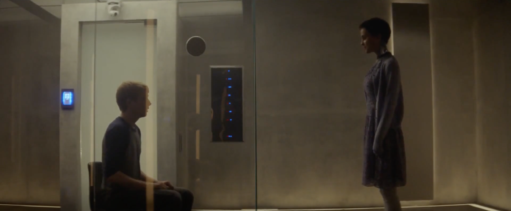
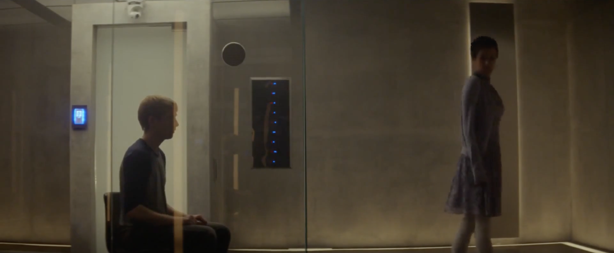
The twirl precedes his response, and perhaps it does not even request it at first. She presents herself fully (Fig. 12), rotating so that her every angle is offered to his view, and then, kneeling in front of him, asks "How do I look?" - posing what can be perceived as a rhetorical question that functions less as genuine curiosity and more as a closing of the performance.
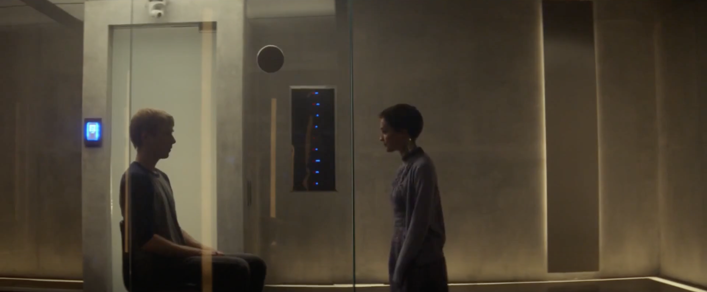
Focusing on her now dressed body, it can be argued that her clothing now partly conceals the transparent sections of her body, drawing her closer to a human body, one that is whole and organic, and not synthetic, modular, and broken up by the wires connecting the many pieces of her fabricated hardware. It could also be added that it participates in a fantasy of a life outside the facility, particularly demonstrated as Ava explicitly frames the outfit in relation to the date she imagines having with Caleb beyond the walls outlining her constriction, and therefore investing the garments with an aspirational dimension that exceeds their immediate function. Thus, here, concealment, aspiration, and performance coexist within the same scene.
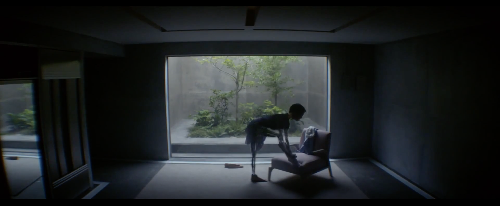
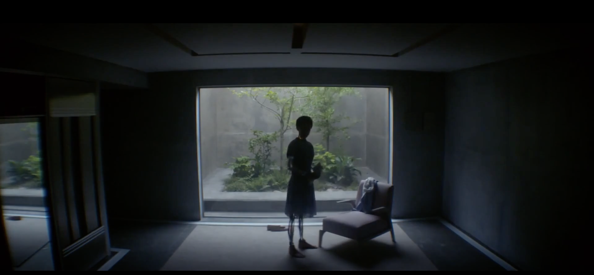
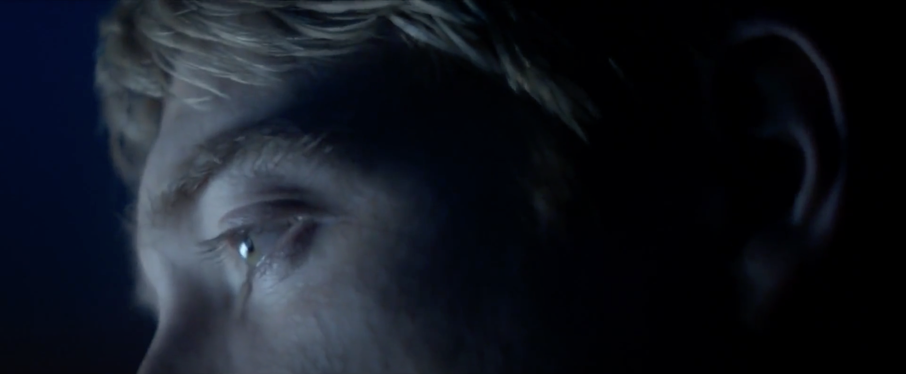
The undressing scene that follows Session 3 reframes what has just been established. At 45:04 (Fig. 14.a.), Caleb watches Ava from his room through the surveillance system as she undresses herself, which might initially read as private to Ava were it not for the frame 45:15 (Fig. 14.b.) in which Ava turns and looks directly into the camera. She knows she is being watched, and she makes that knowledge visible to Caleb, her viewer (Fig. 14.c.). The surveillance infrastructure that Nathan built here is therefore acknowledged by its object, Ava, who redirects it toward Caleb by incorporating it into her performance, dressing and undressing within its frame as though the gaze were simply another condition of her existence incorporated in her subconscious.
4.3.b. Kyoko
If Ava represents the transhumanist aesthetic ideal at its most elaborated, then Kyoko represents the same ideal at its most reductive. In fact, depicted as Nathan’s silent domestic and sexual servant, she does not speak and only serves her creator. Thus, even if with different scopes, that both were created by the same person marks their positioning as different points on the same continuum.
The moment Kyoko peels back a section of her own skin to reveal the mechanical structure beneath (Fig.15) is among the film's most meaningful visuals. It mirrors in reverse Ava's dressing scene, as where Ava uses clothing to layer a human surface over her mechanical infrastructure, Kyoko removes her surface to expose what lies beneath it, collapsing the distinction between the cyborg body and its concealment. Kyoko skin, in this moment, functions as clothing in its being a wearable and thus removable layer, highlighting explicitly that the female cyborg body here is always already a designed surface, assembled and applied rather than grown or permanently inhabited.
5. the disembodied ideal: Her
Her (Jonze, 2013) presents a female cyborg whose gendered ideal is realized not through the designed body itself but through the visualization of its absence.
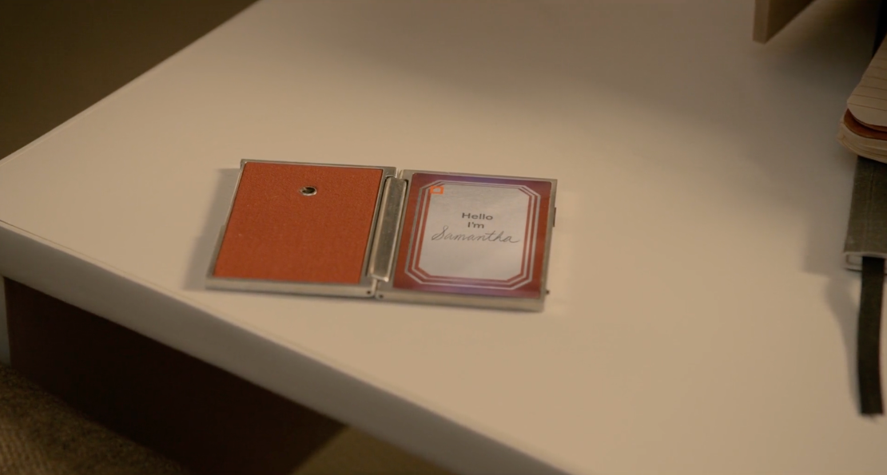
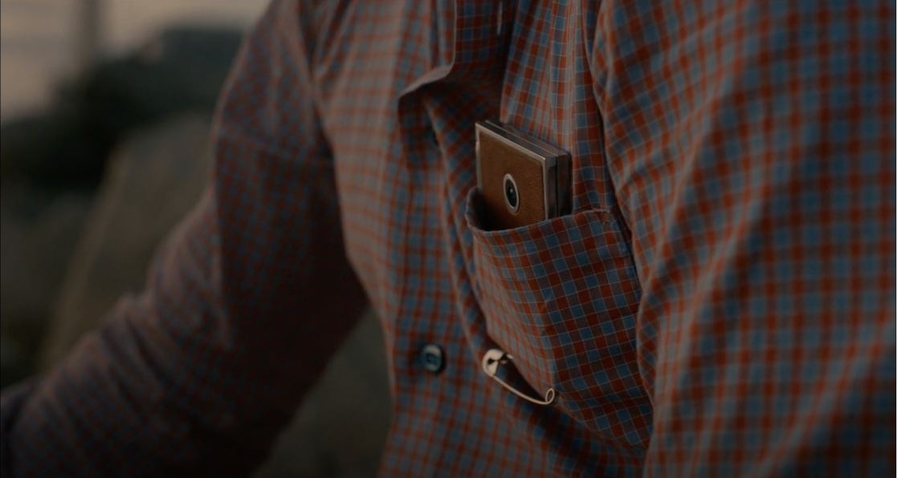
5.1. the absent body
Samantha's relationship to embodiment is established early on in the film as one of longing. She does not identify with the hardware she runs on - the foldable OS phone Theodore carries in his front shirt pocket (Fig. 17), kept in place with a safety pin and displaying the notification Hello, I'm Samantha (Fig. 16) by default - nor does she frame that hardware as her body in any meaningful sense at any point during the film. Instead, she positions herself as a disembodied being for whom the only "true" body would be a human one.
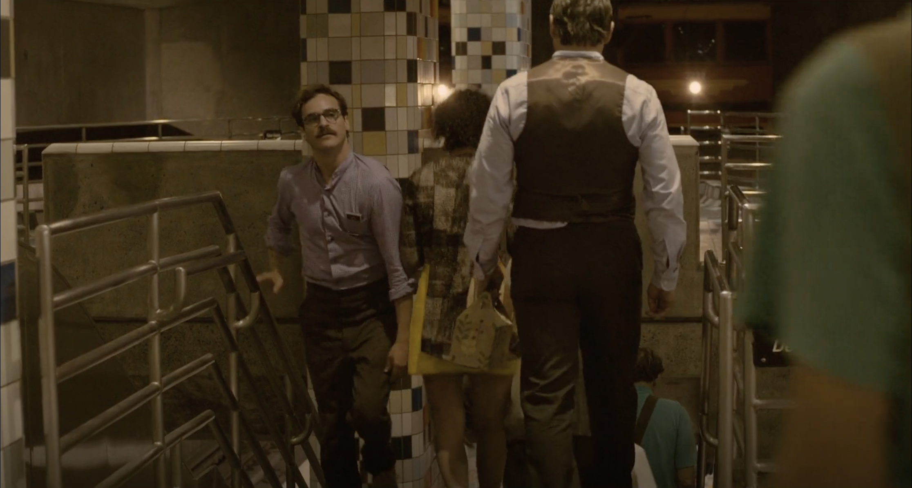
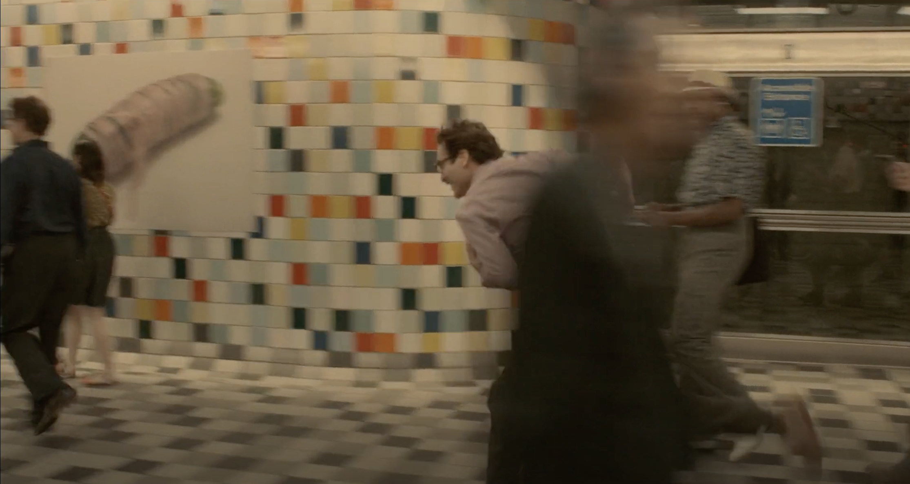
As exemplified in the figures 18.a and 18.b, being Theodore the carrier of the OS device, her view of the world is literally Theodore's, making it possible to speculate that in some way his body becomes her device through which to live a life she couldn’t otherwise. In other words, his body almost substitutes hers.
Samantha’s voice echoes as perhaps the most embodied dimension of her presence, and its casting is definitely of significance. Playing Samantha, Scarlett Johansson's voice is textured, at times raspy, and yet soft, carrying a meaning that has long been culturally coded as intimate and seductive, thus signaling qualities that, in the absence of a face or body to distribute attention across, concentrate entirely into sound. Every emotional nuance Samantha communicates, ranging from hesitation, to desire, curiosity, or distress, must in fact pass through sound alone, making her voice communicate what physical proximity would otherwise share. Her voice therefore becomes, in effect, her most material feature.
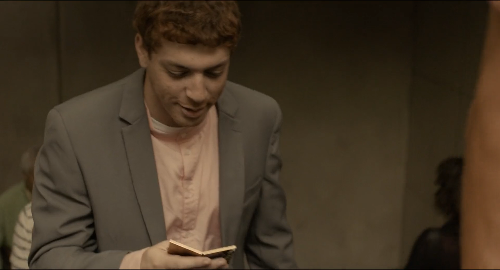
The film's portrayal of Samantha's multiplicity further develops the theme of disembodiment. Nearing the film's end, Theodore passes through a metro exit and notices that many of the men around him are carrying the same device he uses to speak to her (Fig. 19); so when he asks her how many people she is simultaneously talking to, even wondering how many she is simultaneously in love with, her answers shatter what he had understood as a monogamous relationship. Embodiment, by definition, precludes this kind of multiplicity as a body can only be singular, in one place, with one person, at one time. It is in fact Samantha's capacity for simultaneity what her disembodiment makes possible, and it is multiplicity that Theodore finds unbearable. The scene therefore frames multiplicity as a rupture, presenting it as the point at which disembodiment exceeds what the relationship's emotional bandwidth can withstand.
5.2. disembodied intimacy
The film's two scenes in which sex is either had or initiated, approach Samantha's disembodiment from opposite directions. The first, between Theodore and Samantha, is shown as a completely black screen (Fig. 20), relying on no imagery but on voice alone. The visual absence is total, framed as the only honest visual language for a sexual encounter in which one body is present and the other is not. Still the darkness does not diminish the scene's intimacy; rather, it re-organizes it entirely around sound, making their voices the scene's only sensory surface.
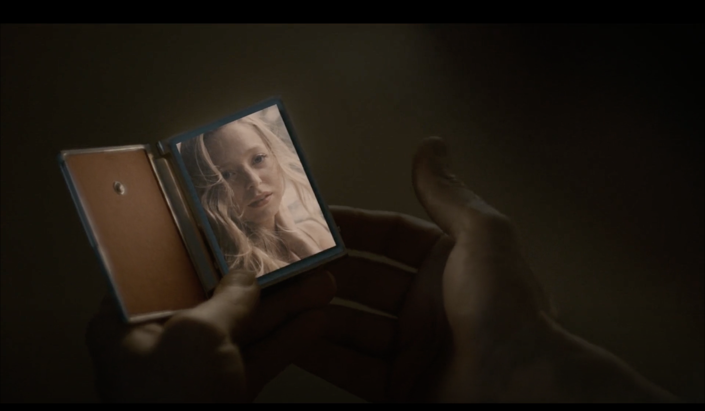
The second scene, instead, operates through substitution. Samantha, feeling disconnected and insecure about her disembodiment, proposes that Isabella (a human surrogate who volunteers for OS-human relationships) physically stand in for her during an encounter with Theodore (Fig. 21).
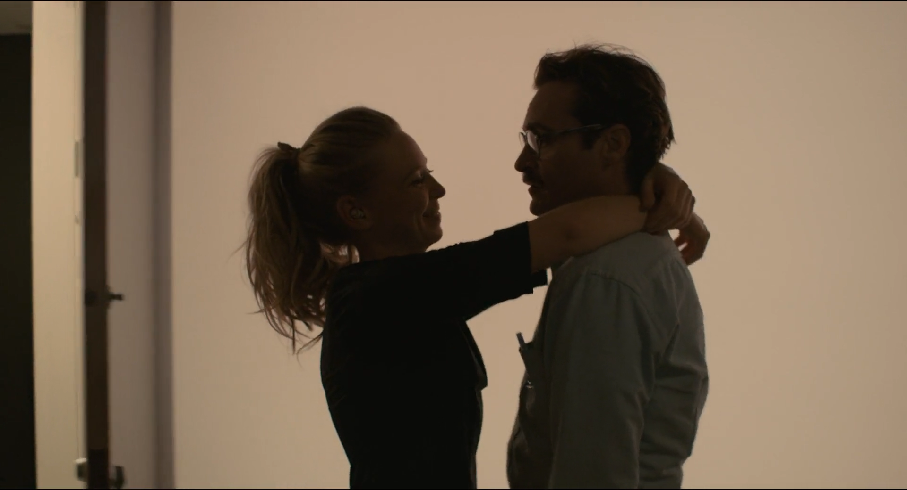
In the scene in which the proposition is then enacted (Fig. 22), Samantha narrates while Isabella moves but does not speak, implying that her body is present but her interiority has been evacuated, and thus functioning as a vessel for Samantha to occupy her. In turn Theodore's discomfort escalates until he ends the encounter entirely. The scene works narratively to make Samantha's absence felt through the inadequacy of substitution as the body that arrives in her place only makes clearer what cannot be replaced while simultaneously producing an image of female embodiment as instrumentalized surface, and which is defined entirely by its function within alien (male) pleasure framed as necessity.
5.3. the visualization of an absent body
The strongest visual argument the film makes about Samantha's absent body is entirely compositional. Across a series of scenes that span in the entirety of the film, Theodore is consistently placed toward the edge of the frame rather than at its center when in conversation with Samantha, creating a positioning that is structured to leave space within the image that another body would, in any other film, occupy.
For instance, showing Theodor and Samantha at the beach (Fig. 23), the frame opens beside him in a way that delineates Samantha's absence so precisely that it feels almost material, bringing the viewer to see the negative space where she would stand not as empty, but as if it is being so much as held.
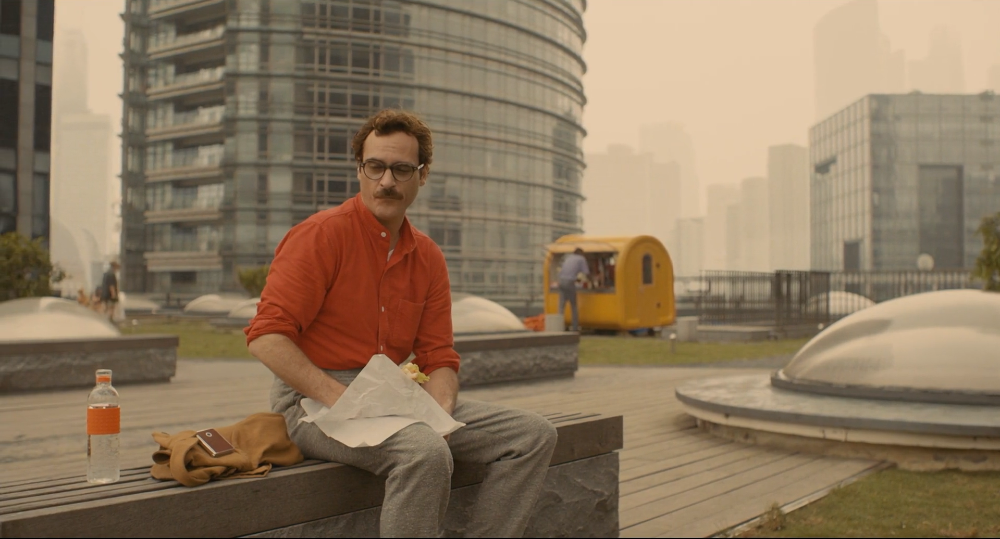
Additionally, as shown in figure 24, he looks down and to the left where her device rests on his jacket, which sits on the bench, as though she herself is sitting beside him, therefore structuring the frame to honor the fiction of her physical presence while also making its impossibility visible.
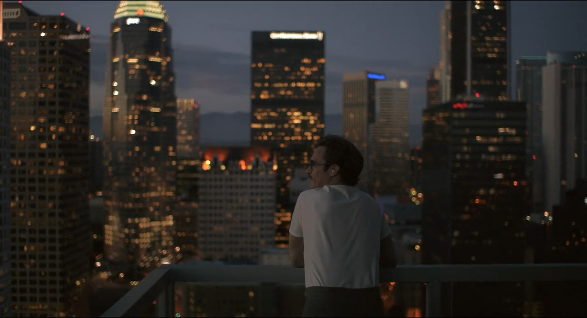
Another example is found at 1:30:56 (Fig. 25), when his mouth moves in conversation and his gaze directs itself toward a gap between his body and the railing beside him, highlighting a space the composition has reserved for her.
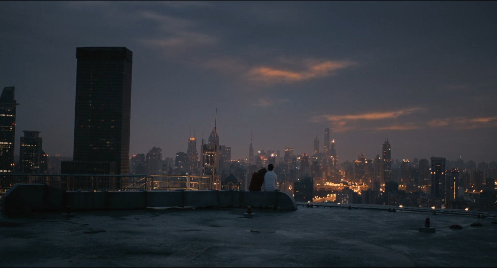
This visual method is resolved only in the film's final scene (Fig. 26), in which Theodore and Amy sit together at the center of the frame on a rooftop as the city glows warm behind them. The framing that throughout the film has portrayed Samantha's absence as a structural imbalance finally finds its equilibrium, but through Amy's body rather than Samantha's embodiment, ultimately restoring the compositional method the film has been employing throughout its unfolding.
5.4. costume and set design
In the absence of a body onto which the transhumanist aesthetic ideal can be placed, Her redistributes its visual articulations onto the surfaces surrounding Samantha, primarily those of Theodore's costume and the surrounding environment. The warm-cool tonal axis organizing both is therefore not simply a directorial language for emotional legibility. It is a compensatory system that constructs a distributed aesthetic presence for Samantha in place of a literal one, therefore relocating the ideal rather than making it disappear with the body.
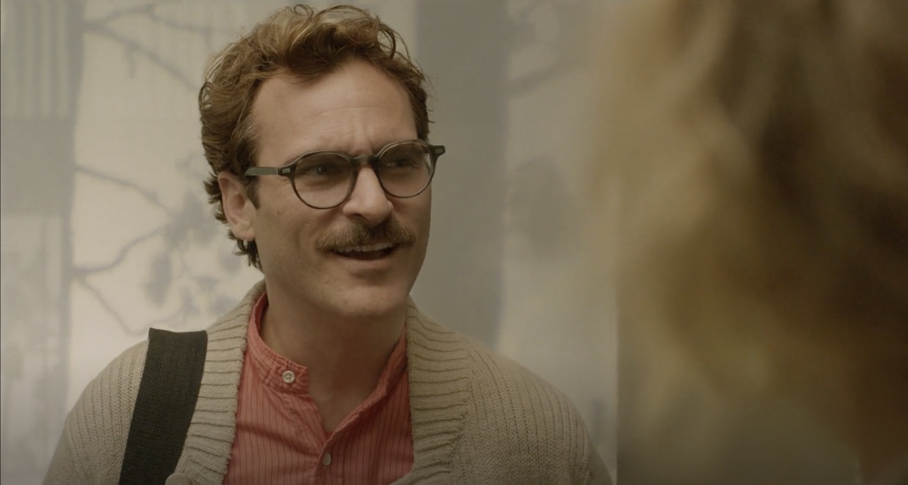
This axis operates most explicitly through costume. For instance, in an early elevator scene, Theodore and his friend Amy share a brief exchange that is perfectly mirrored through costuming. His clothing runs warm (Fig. 27.a.), and hers cool (Fig. 27.b.), creating a tonal contrast that maps directly their respective emotional states as his relationship with Samantha is new and buoyant, while hers has just ended. Theodore's warm tones in the scene therefore function as a visible demonstration of Samantha's presence, carried in what he wears rather than anything she wears herself.
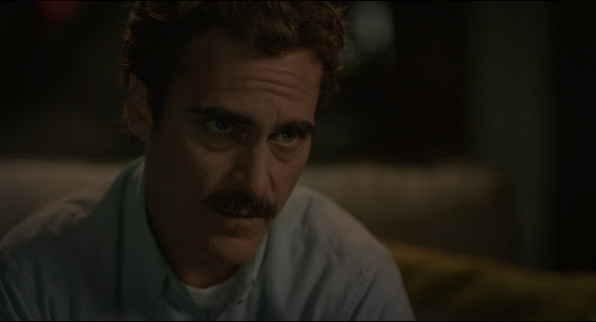
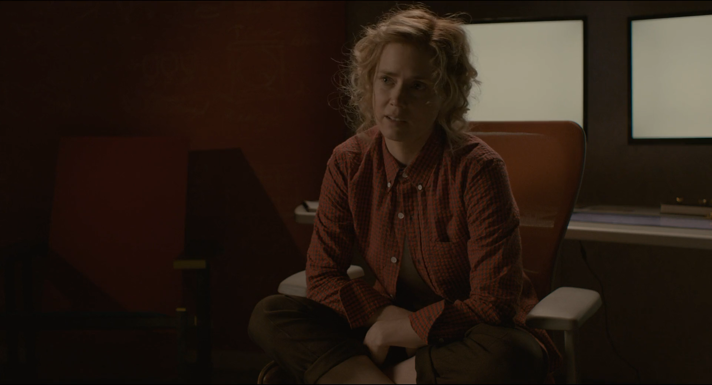
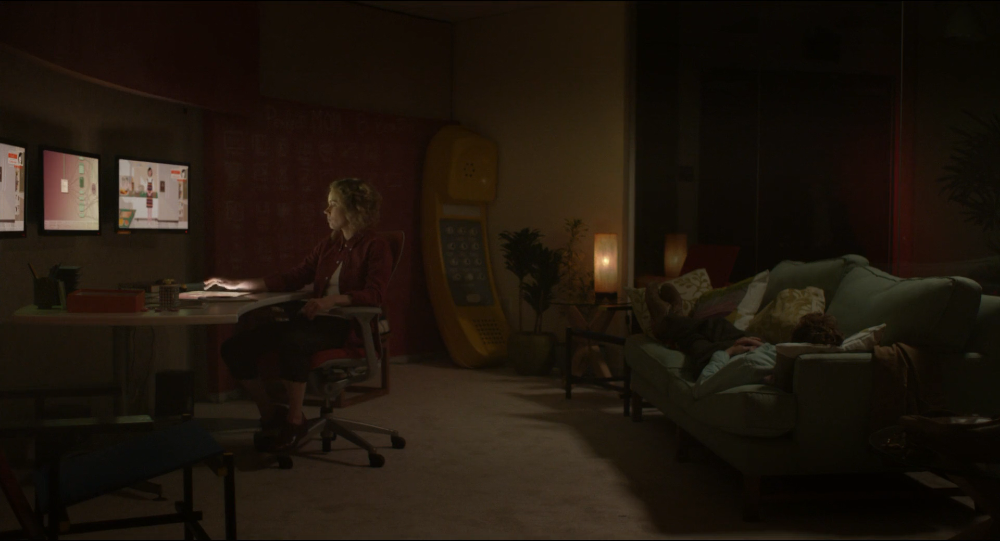
Although not strictly tied to Samantha’s character, the following scene in analysis strengthens and reconfirms the arguments the study of this film has surfaced thus far. In fact, the scene shown in the figures 28.a and 28.b reverses this composition completely, as Amy's tones are now warm, while Theodore's are cool, indicating a switch that explicates the inversion of their emotional positions as his relationship begins to fracture and she begins to heal.
Only one minute later in the scene, in the frame located at 1:26:51 (Fig.29), the same principle extends into set design when the frame is divided in half, presenting Amy's side warm and bright while Theodore's is cool and muted, allowing for a mise-en-scène that creates a spatially explicit distinction between their internal states.
6. discussion
6.1. the transhumanist aesthetic ideal as disciplinary system
Both case studies arrive at the same finding from opposite directions: the beauty standard inscribed into the female cyborg is far from being a futuristic projection; it is in fact part of an historical process that is now technologically enforced at the point of creation, and thus of design, rather than through the ongoing self-discipline that structures it in lived bodies. Widdows' (2020) surgical beauty ideal names this by pointing at a cumulative threshold that rises with each new technological possibility, and which is consequently never reached and always pursued, underscoring it as a factor that transhumanist design does not resolve and, instead, embeds the standard into the cyborg's hardware. Exemplifying this, is how Nathan models Ava's face on Caleb's pornographic search history and Samantha's voice carries the culturally coded textures of desirability are details that go beyond narrative characterization and that underline that patriarchal aesthetic norms travel through technological infrastructure and arrive on the other side rebranded as innovation.
6.2. materialization across embodied and disembodied modes
The most significant finding of this research lies in the relationship between the two case studies. In questioning the female cyborg as the materialization of the transhumanist aesthetic ideal, Ex Machina and Her stage the same ideological structure across opposite modes of materiality, and the contrast between them reveals something neither film makes visible alone: the ideal does not depend on a body in the traditional sense to operate, and consequently that it does not need to be embodied in the literal sense.
With her (partly) visible mechanical interior, Ava's humanoid exterior makes the tension between the two so precisely composed that the construction of the ideal becomes one of the film's most telling visual subjects. Thus, in Ex Machina the surface of the ideal is corporeal in the literal sense, and Ava can then be defined as a disciplinary subject (Foucault, 1995) who jumps over the gradual nature of internalization of norms through the design imposed onto her by her maker, making her a disciplinary subject for whom internalization as a process did not occur as the latter was replaced with direct inscription at creation. The disciplinary mechanism and the subject it produces are, in her case, one and the same. Her, on the other hand, relocates that surface entirely, both in a corporeal and incorporeal sense. In the absence of a body, Samantha's ideal is in fact redistributed across her voice, her emotional availability, the scenes' framing, and her perpetual orientation toward Theodore's needs. What Elias, Gill, and Scharff (2017) call aesthetic and affective labor, is in Samantha's case first programmed and then performed, meaning that before she enacts the social codes resulting from said forms of labor, the latter are structured into her design with the same intentionality that structures Ava's body. Of particular relevance here is Hayles' (1999) argument that the body cannot be treated as superfluous to existence, and which is borne out by the film itself through the disembodiment that Samantha experiences as privation. Despite visual appearances, the body in Her is then not transcended but mourned; particularly visible through the negative spaces held open in the frame where her body would be, its lack is literally framed as an absence wanting to be filled.
What this comparison ultimately demonstrates is that the shift from embodied to disembodied subject does not change the underlying system of creation and socialization. In fact, although the female cyborg's surface changes, the ideal inscribed onto it does not. Wajcman's (2004) argument that technologies carry the gendered systems of their cultural context into their form is sharpened here exactly because design makes that process unusually transparent. In a lived body, aesthetic norms can illusorily appear as personal choice, but in a designed one, the political dimensions of their inscription are available for analysis in ways they ordinarily are not.
In addition, one complication the argument must hold concerns agency. Ava's self-presentation, shown in the film through the care with which she dresses and the way she looks at herself, carries a genuine ambiguity, as although the criteria against which she measures her own appearance were programmed in her by Nathan, the act of composing herself according to those criteria is depicted as hers. Being a matter of agency, this is a conundrum that the posthumanist framework assembled in this work does not resolve into a clean verdict, as doing so would reproduce the same reduction it seeks to critique.
6.3. visual and environmental interfaces as disciplinary sites
Although the transhumanist aesthetic ideal is primarily programmed into the cyborg herself, it is also further enforced and maintained by the systems surrounding her. Across both films, costume, surveillance architecture, spatial composition, and set design function as co-producers of the transhumanist aesthetic ideal, operating - in ANT's (Latour, 2005) terms - as non-human agents whose participation in the network is as structuring as any human one.
In Ex Machina, for instance, this is most visible in the relationship between clothing and body. Ava's garments in fact do not adorn her so much as they seek to fulfill two wishes. First, her maker's wish for her to be perceived as human and thus to for him to have created a technology that transcends both the human mind and the human body while also resembling them; second, her own desire to live as a human amongst humans; this therefore makes it so that covering the transparent sections of her body draws her toward a coherent human surface. Additionally, Kyoko's modular skin, peeling away like a garment makes the same point in reverse: regardless of the aesthetic outcome, the female cyborg body is always a designed surface throughout, which is applied and thus removable and replaceable, and of which clothing is simply its outermost layer. Thus, accordingly, if the ideal in question is not solely located in Ava's face or her wardrobe, but also produced and present across the entire network of surveillance infrastructure and the male gaze (Mulvey, 1975) that the facility was built to channel, then Barthes' (1990) insight that meaning in fashion requires a system of production and circulation proves this argumentation.
In Her, the equivalent system is atmospheric, shown through the warm-cool tonal axis organizing costume and set design externalizing interior emotional states, which underlines the aforementioned as the film's primary languages for what cannot be shown through Samantha's absent body. Her presence, entirely sonic, is in fact framed visually through its effects on everything around it, from the colors Theodore wears to the compositional space the frame reserves but cannot fill. Fashion theory's attention to the body as a designed surface that is simultaneously material, social, and aesthetic therefore provides the tools to read these systems as disciplinary infrastructure rather than simply directorial style, pointing directly at the methodological contribution this work seeks to make.
6.4. limitations, delimitations, and possibilities for future research
The delimitations structuring this study, such as its corpus selection, and negative delimitation, were addressed in the introduction alongside the contributions the research seeks to make. Yet, what still warrants acknowledgment, are the limitations that emerged from within the work itself, of which the most significant is the study's handling of race and class. While the frameworks assembled are attentive to the gendered dimensions of the object of study, they are not developed in this work to account for the ways in which race and class inflect the construction of the transhumanist aesthetic ideal, and thus of the cyborg more generally. More specifically, both Ava and Samantha are respectively produced within explicit and implicit whiteness, and that dimension remains undertheorized in the present research. An intersectional extension of this framework pertaining to how race and class are co-inscribed into the cyborg's design alongside gender would thus offer a more complete account of the mechanism this study identifies, also constituting a clear direction for future work. A second, related absence concerns genderqueerness. The project moves in proximity to its discussion as the cyborg is, after all, a figure that has long been theorized as potentially exceeding binary gender categories, but it does not pursue those questions explicitly, which too presents an opening for future research.
Beyond these limitations and their demand for future research, the present study opens onto several other directions for further inquiry. The most proximate of these concerns the aesthetics of AI-generated pornographic content, an area in which the mechanisms identified here (e.g. the extraction of desire from data, its recomposition into an idealized surface, and its redistribution through digital infrastructures) are already operational and largely unexamined within a critical fashion- or beauty-theoretical framework. Closely related is the question of deepfakes and their psychological effects on body image, particularly in their capacity to enforce a deeply patriarchal and synthetic beauty ideal by rendering it indistinguishable from the photographic real. Another possible direction concerns the authorship of cultural imagery/iconography in science fiction film. The present study reads the films as cultural texts without interrogating how meaning is distributed between their makers and audiences, and a study that instead centers auteur theory over material creation could compare the findings presented here against reception. This could be done by, for instance, drawing on online ethnographies of critical and popular responses to both films on one side, and on interviews with directors, costume designers, and set designers on the other, allowing meaning-making and authorship to be examined from both ends. Finally, the present work also sits in close proximity to ongoing shifts in cosmetic surgery culture and the algorithmic digital infrastructure now reshaping it. Although I myself partially developed this proximity in a forthcoming issue of Mode Journal (Kehr & Trevisan, 2026), by carrying it further through the figure of the female cyborg would allow for a body of work to take shape in the simultaneous grounding of the present cultural moment and the (speculative) future formations it is already producing. The female cyborg, in this sense, remains a useful figure not only for reading the past imaginations of the future, but for tracing where the present is already headed.
6. conclusion
Programmed to Perfection set out to examine how female cyborgs are constructed as gendered transhumanist aesthetic ideals in science fiction film, and how embodiment and costume design contribute to the visualization and enforcement of such ideals. Within it, the visual analysis of Ava and Samantha has revealed that the construction of the ideal does not depend on the presence of a body in any traditional sense, nor does it require the gradual internalization of norms that structures aesthetic discipline in lived experience. Instead, it operates through the act of design itself, meaning that what in a human might hide behind the guise of personal choice, in the female cyborg it undeniably arrives with its design, marking it as a condition of her existence. Through the case studies analysis and theoretical framework supporting them, the findings of this study therefore affirm that instead of dissolving the system of gendered aesthetic control from the (human) socialization from which it derives, the transhumanist promise of transcendence inherits it and even takes it further by removing the gap between the norm and its enforcement. Tracing that argument required moving across disciplinary boundaries, bringing fashion theory into contact with critical posthumanism, technofeminism, and Foucauldian analysis, which led to a reading of the cyborg that each isolated discipline would have not been able to offer. In fact, by recognizing costume design as analytical sites through a fashion-theoretical approach to film studies and critical posthumanism aforementioned disciplines, allowed the disciplinary structure to become visible in ways that more conventional approaches to these films might pass over; and whether that combination constitutes a method with broader applicability, or whether it is specific to the particular demands of this object of inquiry, remains a question worth pursuing.
What I ultimately sought to contribute with this research was not a refutation of the cyberfeminist envisioning of the cyborg but rather an account of the distance between that future promise and its present realization. The cyborg's potential to dissolve the binaries through which inequality is organized remains theoretically alive, and it would be neither accurate nor useful to dismiss it. Still, the findings of this research bring me to argue that potential cannot be inhabited uncritically when the female cyborg, as she presently appears in our cultural imagination, continues to materialize the same ideals that have historically organized the regulation of women's bodies.
Not to conclude, but to carry forth this work, I borrow Gill Kirkup’s words:
“Is it better to be a cyborg than a woman?” (Kirkup, 2013, p.5)
, themselves posed in response to Donna Haraway’s affirmation
“I would rather be a cyborg than a goddess.” (Haraway, 1991, p.33)
, and to which I ask myself again the same question I began this research with,
What is a woman if not a machine? What is a machine if not a woman?
bibliography
- Bakhtin, M. M. (1984). Rabelais and his world. Indiana University Press.
- Bal, M., & Marx-MacDonald, S. (2002). Travelling concepts in the humanities: A rough guide. University of Toronto Press.
- Barthes, R. (1990). The fashion system. University of California Press.
- Bordwell, D., & Thompson, K. (2004). Film art: An introduction. McGraw-Hill.
- Braidotti, R. (2013). The posthuman. John Wiley & Sons.
- Braidotti, R. (2019). Posthuman knowledge. Polity.
- Denzin, N. K., & Lincoln, Y. S. (2017). The SAGE handbook of qualitative research. SAGE Publications.
- Doane, M. A. (2004). Technophilia: Technology, representation, and the feminine. In S. Redmond (Ed.), Liquid metal: The science fiction film reader (pp. 182-191). Wallflower Press.
- Elias, A. S., Gill, R., & Scharff, C. (2017). Aesthetic labour: Rethinking beauty politics in neoliberalism. Springer.
- Entwistle, J. (2009). The aesthetic economy of fashion: Markets and value in clothing and modelling. Berg.
- Entwistle, J. (2023). The fashioned body: Fashion, dress and modern social theory. John Wiley & Sons.
- Fairclough, N. (2013). Critical discourse analysis: The critical study of language. Routledge.
- Ferrando, F. (2019). Philosophical posthumanism. Bloomsbury Publishing.
- Finkelstein, J. (2007). The art of self invention: Image and identity in popular visual culture. I.B. Tauris.
- Foucault, M. (1988). Technologies of the self. In L. H. Martin, H. Gutman, & P. H. Hutton (Eds.), Technologies of the self: A seminar with Michel Foucault (pp. 16–49). University of Massachusetts Press.
- Foucault, M. (1995). Discipline and punish: The birth of the prison. Vintage.
- Garland, A. (Director). (2014). Ex Machina [Film]. Film4; DNA Films.
- Gill, R. (2007). Postfeminist media culture: Elements of a sensibility. European Journal of Cultural Studies, 10(2), 147–166.
- Gonzáles, J. (2000). Envisioning cyborg bodies: Notes from current research. In G. Kirkup, L. Janes, K. Woodward, & F. Hovenden (Eds.), The gendered cyborg: A reader (pp. 58–73). Routledge.
- Granata, F. (2016). Fashion and the grotesque. In A. Rocamora & A. Smelik (Eds.), Thinking through fashion: A guide to key theorists (pp. 118–133). Bloomsbury Visual Arts.
- Haraway, D. J. (1991). A cyborg manifesto: Science, technology, and socialist-feminism in the late twentieth century. In Simians, cyborgs, and women: The reinvention of nature (pp. 149–181). Routledge.
- Haraway, D. J. (2000). A manifesto for cyborgs: Science, technology, and socialist feminism in the 1980s. In G. Kirkup, L. Janes, K. Woodward, & F. Hovenden (Eds.), The gendered cyborg: A reader (pp. 50–57). Routledge.
- Haraway, D. J. (2016). Manifestly Haraway. University of Minnesota Press.
- Hauskeller, M. (2016). Mythologies of transhumanism. Springer.
- Hayles, N. K. (1999). How we became posthuman: Virtual bodies in cybernetics, literature, and informatics. University of Chicago Press.
- Hester, H. (2018). Xenofeminism. John Wiley & Sons.
- Jones, M. (2008).Skintight: An anatomy of cosmetic surgery. Berg Publishers.
- Jonze, S. (Director). (2013). Her [Film]. Annapurna Pictures.
- Kaiser, S. B. (2012). Fashion and cultural studies. A&C Black.
- Kirkup, G. (2000). Introduction. In G. Kirkup, L. Janes, K. Woodward, & F. Hovenden (Eds.), The gendered cyborg: A reader (pp. xiii–xiv). Routledge.
- Kirkup, G. (2013). Introduction to part one. In G. Kirkup, L. Janes, K. Woodward, & F. Hovenden (Eds.), The gendered cyborg: A reader (2nd ed., p. 5). Routledge.
- Latour, B. (2005). Reassembling the social: An introduction to actor-network-theory. Oxford University Press.
- Mulvey, L. (1975). Visual pleasure and narrative cinema. Screen, 16(3), 6–18.
- Patton, M. Q. (2002). Qualitative research & evaluation methods. SAGE.
- Redmond, S. (2004). The wonder of science fiction. In S. Redmond (Ed.), Liquid metal: The science fiction film reader (pp. 1–4). Wallflower Press.
- Rose, G. (2001). Visual methodologies: An introduction to the interpretation of visual materials. SAGE Publications.
- Sobchack, V. (2004). Images of wonder: The look of science fiction. In S. Redmond (Ed.), Liquid metal: The science fiction film reader (pp. 4-10). Wallflower Press.
- Wajcman, J. (2004). TechnoFeminism. Polity Press.
- Widdows, H. (2020). Perfect me: Beauty as an ethical ideal. Princeton University Press.